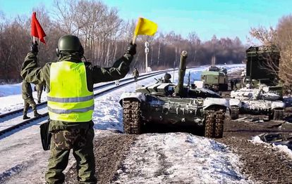
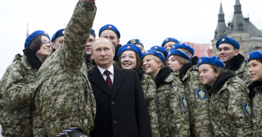

“La amenaza rusa es inaceptable”, asegura la ministra de Exteriores, Annalena Baerbock, en la Conferencia de Seguridad de Múnich
Ante el grave deterioro de la situación sobre el terreno en Ucrania —con intercambios de fuego de artillería de una intensidad sin precedentes en los últimos años y el anuncio de nuevos ejercicios rusos con misiles con capacidad nuclear—, el Gobierno alemán ha enviado este viernes al Kremlin un firme mensaje disuasorio en la sesión inaugural de la Conferencia de Seguridad de Múnich, un foro que reúne cada año en la capital bávara a decenas de líderes y ministros de Exteriores y Defensa. De forma inusual, este año Moscú ha decidido no enviar una delegación, lo que muchos observadores han interpretado como una señal extremadamente negativa.
“El escenario de un corte total de intercambios económicos entre Rusia y Alemania y la UE no es poca cosa”, ha dicho la ministra de Asuntos Exteriores, Annalena Baerbock, refiriéndose a las sanciones por una eventual agresión rusa contra Ucrania con una terminología más dura de la habitual mención occidental a las “graves consecuencias económicas”. “Alemania está lista para pagar un alto precio económico”, advirtió la responsable de la diplomacia alemana, quien calificó de “exigencias de la Guerra Fría” los requerimientos de Moscú en un documento publicado antes de la conferencia. “La amenaza rusa es inaceptable”, zanjó.
La ministra compareció en el foro en una sesión en la que también intervino el secretario de Estado de EE UU, Antony Blinken, quien quiso subrayar la determinación de la Administración de Biden en reavivar los vínculos con aliados y socios después del turbulento periodo de Trump. Blinken advirtió de que Rusia “no parece estar en el camino de la diplomacia”, que pese a sus anuncios de repliegue “lo que se ve sobre el terreno es lo contrario, nuevas tropas acumulándose, incluidas brigadas de élite que formarían parte de cualquier escenario de agresión”. El representante de EE UU ante la OSCE ha elevado este viernes a entre 169.000 y 190.000 el número de soldados rusos desplegados.

Alemania llega a la cita tras haber encontrado una línea más clara en el conflicto con Rusia después de varias semanas de indefinición que le costaron las críticas y la desconfianza de los aliados occidentales. El perfil bajo inicial del nuevo canciller, Olaf Scholz, ha dejado paso en los últimos días a una actitud mucho más proactiva con visitas a Estados Unidos, Ucrania y Rusia en un intento de volver a situar a Berlín en primera línea de los esfuerzos diplomáticos para evitar el conflicto. Esta semana, en su encuentro con Vladímir Putin en el Kremlin, el canciller se mostró firme y mencionó el polémico gasoducto Nord Stream 2, algo que se había negado a hacer en visitas previas como la que mantuvo con Joe Biden.
La evolución de la posición alemana —marcada por ciertas divergencias en política exterior entre los socios de la coalición gubernamental— no llega sin embargo a tocar la negativa a suministrar armas a Ucrania. Durante la sesión en Múnich, el alcalde de Kiev, Vitaly Klitschko, reclamó explícitamente el suministro de armamento para defenderse de una eventual agresión rusa. Baerbock argumentó que por razones históricas, por la legislación nacional vigente y por las circunstancias negociadoras, Berlín considera oportuno no alterar su negativa en ese apartado. La ministra señaló que es parte del juego de la Alianza que los socios desempeñen distintos papeles, y reivindicó el de Alemania como principal soporte financiero para Ucrania. “También es importante evitar el riesgo de una desestabilización interna por la vía económica”, señaló.
